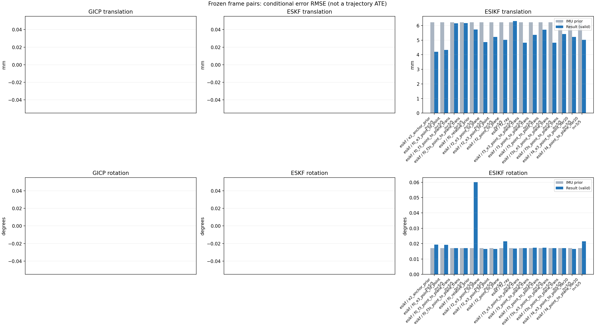

20261015_112553_up · depth=disparity_cache · cache=a27ae1bec31d0f980549
模型视差：/home/ubuntu22/slam/SIO_SLAM/models/tensorrt/disp_896x448_fp16.plan；engine SHA256=604cf6ac1f705c877260711730dd5d2d58c2a21f3020c03c668401ef7fb1e768。输入为生产裁剪与光照处理后的 RGB 0..255；此实验使用原始浮点像素视差，不应用完整前端的邻域视差后处理。
原始 ONNX SHA256：e9f49736a65d68d06681add463866b6defdf78fdd7f4f50f6cc941b682fdc0bc。
代价体图改写验证：ONNX Runtime 固定随机特征输入，最大绝对误差 0；该项检查图改写，完整模型精度仍需由录制数据评估。
配准代码版本：744ac2d993ae629b0cc44a3b1d995e04ab4fad48；观测生成版本：744ac2d993ae629b0cc44a3b1d995e04ab4fad48。
固定图像对与纯 IMU 先验；ESKF 回放固定 GICP 观测，ESIKF 直接读取点云。真值只用于此报告。
同时查看 converged 与 solver_status：上游默认 Stereo 在 max_iter / stopped_at_minimum 时也可能置 converged=true。valid 表示输入检查通过，不表示精度提升。欧氏 GICP 未提供独立的点距 RMSE，该列显示 NaN。
误差按每对图像的锚点计算，单位 m / degrees。此处 RMSE 不是全序列 ATE；末帧受同一锚点条件约束。NIS 与条件马氏距离是诊断量，少量相关图像对不能用于宣称协方差已校准。
全部指标 CSV · R / P 矩阵 CSV · Stereo 求解逐轮 CSV · ESIKF 逐轮轨迹 CSV · 末轮 H / R / K_pose 矩阵 CSV · 配置快照 · 矢量图
unflagged 排除纯惯性先验平移误差超过 50 mm 的图像对；whitened 为误差按协方差白化后的每自由度均值，协方差与实际误差相符时约为 1。prior_whitened 用真值误差只检验先验 P；NIS 为 ESIKF 首轮 rᵀ(P+R)⁻¹r，不用真值，检验的是 P+R 的总量，单靠它分不开 P 与 R，偏差、错误对应和线性化误差也会抬高它。观测方差超过先验方差 1e+04 倍的方向视为不可观，从 NIS 及其自由度中去掉（nis_dof）。一致时 nis_per_dof 均值约 1、nis_over_chi2_median 中位数约 1；帧对少且共享序列，超出 95% 分位的比例只作参考。
| stage | method | variant | valid | total | result_translation_rmse_m | result_rotation_rmse_deg | result_translation_median_m | result_rotation_median_deg | result_translation_rmse_unflagged_m | result_rotation_rmse_unflagged_deg | improved_translation | improved_rotation | posterior_whitened_by_P_rot_mean | posterior_whitened_by_P_trans_mean | prior_whitened_by_P_rot_mean | prior_whitened_by_P_trans_mean | nis_per_dof_mean | nis_over_chi2_median_median | nis_exceeds_chi2_95_fraction |
|---|---|---|---|---|---|---|---|---|---|---|---|---|---|---|---|---|---|---|---|
| esikf | esikf | e2_anchor_prior | 5 | 5 | 0.0041992 | 0.019409 | 0.0031299 | 0.012861 | 0.0041992 | 0.019409 | 2 | 2 | 28.997 | 47.426 | 20.811 | 6.4148 | 4.2098 | 3.0188 | 0.8 |
| esikf | esikf | f0_e3_point_to_point | 5 | 5 | 0.0043252 | 0.019186 | 0.0035248 | 0.012568 | 0.0043252 | 0.019186 | 3 | 2 | 0.89369 | 0.49073 | 0.83362 | 0.030325 | 0.051178 | 0.032352 | 0 |
| esikf | esikf | f0_f3_point_to_plane_trans | 5 | 5 | 0.0061621 | 0.017114 | 0.0046376 | 0.012824 | 0.0061621 | 0.017114 | 2 | 2 | 0.85282 | 20.392 | 0.83362 | 0.030325 | 15.233 | 10.407 | 0.6 |
| esikf | esikf | f0_f3s_point_to_plane_trans | 5 | 5 | 0.006165 | 0.017042 | 0.0046474 | 0.012913 | 0.006165 | 0.017042 | 2 | 0 | 0.83362 | 20.598 | 0.83362 | 0.030325 | 15.233 | 10.407 | 0.6 |
| esikf | esikf | f0_relative_prior | 5 | 5 | 0.0057379 | 0.060035 | 0.003541 | 0.012092 | 0.0057379 | 0.060035 | 2 | 1 | 39.139 | 43.941 | 0.83362 | 0.030325 | 2.8698 | 2.3547 | 0.6 |
| esikf | esikf | f2_e3_point_to_plane | 5 | 5 | 0.004866 | 0.016536 | 0.0018549 | 0.012898 | 0.004866 | 0.016536 | 3 | 3 | 20.889 | 6.2918 | 20.811 | 6.4148 | 0.45046 | 0.64909 | 0 |
| esikf | esikf | f2_e3_point_to_point | 5 | 5 | 0.0052251 | 0.016539 | 0.001846 | 0.012728 | 0.0052251 | 0.016539 | 3 | 3 | 20.922 | 6.6194 | 20.811 | 6.4148 | 0.10037 | 0.095884 | 0 |
| esikf | esikf | f2_point_to_plane | 5 | 5 | 0.0050255 | 0.021478 | 0.0017893 | 0.015179 | 0.0050255 | 0.021478 | 3 | 1 | 22.991 | 13.889 | 20.811 | 6.4148 | 17.851 | 14.405 | 1 |
| esikf | esikf | f2_ray | 5 | 5 | 0.0063157 | 0.016776 | 0.0048001 | 0.011933 | 0.0063157 | 0.016776 | 2 | 3 | 20.256 | 21.048 | 20.811 | 6.4148 | 23.126 | 33.561 | 1 |
| esikf | esikf | f3_e3_point_to_plane_trans | 5 | 5 | 0.0048221 | 0.017062 | 0.0018414 | 0.01285 | 0.0048221 | 0.017062 | 4 | 2 | 20.886 | 6.2316 | 20.811 | 6.4148 | 1.0876 | 1.2552 | 0 |
| esikf | esikf | f3_point_to_plane_trans | 5 | 5 | 0.0053683 | 0.017391 | 0.0033903 | 0.012099 | 0.0053683 | 0.017391 | 2 | 2 | 21.97 | 20.168 | 20.811 | 6.4148 | 22.681 | 25.138 | 0.8 |
| esikf | esikf | f3_point_to_point_trans | 5 | 5 | 0.0057128 | 0.017269 | 0.004927 | 0.011033 | 0.0057128 | 0.017269 | 2 | 1 | 21.059 | 161.06 | 20.811 | 6.4148 | 5.6645 | 6.86 | 0.8 |
| esikf | esikf | f3s_e3_point_to_plane_trans | 5 | 5 | 0.0048226 | 0.017042 | 0.0018414 | 0.012913 | 0.0048226 | 0.017042 | 4 | 0 | 20.811 | 6.2318 | 20.811 | 6.4148 | 1.0876 | 1.2552 | 0 |
| esikf | esikf | f3s_point_to_plane_trans | 5 | 5 | 0.0054158 | 0.017042 | 0.0034552 | 0.012913 | 0.0054158 | 0.017042 | 2 | 0 | 20.811 | 20.456 | 20.811 | 6.4148 | 22.681 | 25.138 | 0.8 |
| esikf | esikf | f4_e3_point_to_point_iter20 | 5 | 5 | 0.0052251 | 0.016539 | 0.001846 | 0.012728 | 0.0052251 | 0.016539 | 3 | 3 | 20.922 | 6.6194 | 20.811 | 6.4148 | 0.10037 | 0.095884 | 0 |
| esikf | esikf | f4_point_to_plane_iter20 | 5 | 5 | 0.0050255 | 0.021478 | 0.0017893 | 0.015179 | 0.0050255 | 0.021478 | 3 | 1 | 22.991 | 13.889 | 20.811 | 6.4148 | 17.851 | 14.405 | 1 |

| stage | case | method | variant | status | solver_status | inliers | converged | covariance_convention | covariance_from_hessian | fitness | registration_rmse_m | prior_trans_error_m | result_trans_error_m | prior_rot_error_deg | result_rot_error_deg | prior_flagged | R_rot_trace_rad2 | R_pos_trace_m2 | nis_regularized | posterior_whitened_by_P_rot | posterior_whitened_by_P_trans | prior_whitened_by_P_rot | prior_whitened_by_P_trans | nis_per_dof | nis_dof |
|---|---|---|---|---|---|---|---|---|---|---|---|---|---|---|---|---|---|---|---|---|---|---|---|---|---|
| esikf | static_start | esikf | e2_anchor_prior | updated | converged | 13059 | 1 | 1 | 0 | 0 | 0.00010829 | 0.00029156 | 0.0066323 | 0.0078414 | 0 | 1.9193e-07 | 1.0124e-06 | nan | 2.084 | 0.86246 | 0.37572 | 0.058095 | 2.6909 | 6 | |
| esikf | static_start | esikf | f0_relative_prior | updated_not_converged | max_iterations | 13064 | 0 | 1 | 0 | 0 | 0.00010829 | 0.0023985 | 0.0066323 | 0.0082357 | 0 | 1.9196e-07 | 1.0042e-06 | nan | 1.9182 | 8.1008 | 0.37534 | 0.00054049 | 2.0989 | 6 | |
| esikf | static_start | esikf | f2_point_to_plane | updated | converged | 13058 | 1 | 1 | 0 | 0 | 0.00010829 | 0.00068379 | 0.0066323 | 0.022265 | 0 | 1.2857e-06 | 5.0544e-06 | nan | 5.1913 | 2.9076 | 0.37572 | 0.058095 | 22.075 | 6 | |
| esikf | static_start | esikf | f2_ray | updated | converged | 13059 | 1 | 1 | 0 | 0 | 0.00010829 | 0.00040849 | 0.0066323 | 0.011933 | 0 | 0.016513 | 2.0739e-05 | nan | 1.2983 | 0.94096 | 0.37572 | 0.058095 | 35.253 | 3 | |
| esikf | static_start | esikf | f3_point_to_point_trans | updated | converged | 13059 | 1 | 1 | 0 | 0 | 0.00010829 | 0.0005239 | 0.0066323 | 0.011033 | 0 | 0.19194 | 1.0123e-06 | nan | 1.2119 | 3.7104 | 0.37572 | 0.058095 | 11.021 | 3 | |
| esikf | static_start | esikf | f3_point_to_plane_trans | updated | converged | 13059 | 1 | 1 | 0 | 0 | 0.00010829 | 0.00041443 | 0.0066323 | 0.010125 | 0 | 1.2849 | 5.0567e-06 | nan | 0.93873 | 1.4828 | 0.37572 | 0.058095 | 33.255 | 3 | |
| esikf | static_start | esikf | f0_f3_point_to_plane_trans | updated | converged | 13104 | 1 | 1 | 0 | 0 | 0.00010829 | 0.0049552 | 0.0066323 | 0.0066487 | 0 | 1.2783 | 4.6583e-06 | nan | 0.37723 | 9.4144 | 0.37534 | 0.00054049 | 28.654 | 3 | |
| esikf | static_start | esikf | f3s_point_to_plane_trans | updated | converged | 13059 | 1 | 1 | 0 | 0 | 0.00010829 | 0.00041435 | 0.0066323 | 0.0066323 | 0 | 1.2849 | 5.0567e-06 | nan | 0.37572 | 1.4819 | 0.37572 | 0.058095 | 33.255 | 3 | |
| esikf | static_start | esikf | f0_f3s_point_to_plane_trans | updated | converged | 13104 | 1 | 1 | 0 | 0 | 0.00010829 | 0.0049549 | 0.0066323 | 0.0066323 | 0 | 1.2783 | 4.6583e-06 | nan | 0.37534 | 9.4129 | 0.37534 | 0.00054049 | 28.654 | 3 | |
| esikf | static_start | esikf | f4_point_to_plane_iter20 | updated | converged | 13058 | 1 | 1 | 0 | 0 | 0.00010829 | 0.00068379 | 0.0066323 | 0.022265 | 0 | 1.2857e-06 | 5.0544e-06 | nan | 5.1913 | 2.9076 | 0.37572 | 0.058095 | 22.075 | 6 | |
| esikf | static_start | esikf | f2_e3_point_to_point | updated | converged | 13059 | 1 | 1 | 0 | 0 | 0.00010829 | 0.00011459 | 0.0066323 | 0.0067736 | 0 | 2.1344e-05 | 8.421e-05 | nan | 0.40301 | 0.065943 | 0.37572 | 0.058095 | 0.032822 | 6 | |
| esikf | static_start | esikf | f0_e3_point_to_point | updated | converged | 13057 | 1 | 1 | 0 | 0 | 0.00010829 | 0.0021266 | 0.0066323 | 0.0067116 | 0 | 2.1386e-05 | 8.4053e-05 | nan | 0.39463 | 0.083203 | 0.37534 | 0.00054049 | 0.025279 | 6 | |
| esikf | static_start | esikf | f2_e3_point_to_plane | updated | converged | 13059 | 1 | 1 | 0 | 0 | 0.00010829 | 0.00012331 | 0.0066323 | 0.0070168 | 0 | 7.5074e-05 | 0.00018163 | nan | 0.42282 | 0.075115 | 0.37572 | 0.058095 | 0.44476 | 5 | |
| esikf | static_start | esikf | f3_e3_point_to_plane_trans | updated | converged | 13059 | 1 | 1 | 0 | 0 | 0.00010829 | 0.00011496 | 0.0066323 | 0.0067236 | 0 | 1.2849 | 0.00018163 | nan | 0.38711 | 0.06519 | 0.37572 | 0.058095 | 0.95381 | 3 | |
| esikf | static_start | esikf | f3s_e3_point_to_plane_trans | updated | converged | 13059 | 1 | 1 | 0 | 0 | 0.00010829 | 0.00011496 | 0.0066323 | 0.0066323 | 0 | 1.2849 | 0.00018163 | nan | 0.37572 | 0.06519 | 0.37572 | 0.058095 | 0.95381 | 3 | |
| esikf | static_start | esikf | f4_e3_point_to_point_iter20 | updated | converged | 13059 | 1 | 1 | 0 | 0 | 0.00010829 | 0.00011459 | 0.0066323 | 0.0067736 | 0 | 2.1344e-05 | 8.421e-05 | nan | 0.40301 | 0.065943 | 0.37572 | 0.058095 | 0.032822 | 6 | |
| esikf | sync_motion | esikf | e2_anchor_prior | updated_not_converged | max_iterations | 12331 | 0 | 1 | 0 | 0 | 0.00031706 | 0.0031299 | 0.012913 | 0.012861 | 0 | 2.0634e-07 | 1.0051e-06 | nan | 8.2256 | 20.557 | 7.3738 | 0.020609 | 9.429 | 6 | |
| esikf | sync_motion | esikf | f0_relative_prior | updated_not_converged | max_iterations | 12337 | 0 | 1 | 0 | 0 | 0.00031706 | 0.003541 | 0.012913 | 0.019748 | 0 | 2.0637e-07 | 1.0138e-06 | nan | 4.265 | 20.411 | 1.4209 | 0.0072183 | 7.6619 | 6 | |
| esikf | sync_motion | esikf | f2_point_to_plane | updated | converged | 12393 | 1 | 1 | 0 | 0 | 0.00031706 | 0.0017893 | 0.012913 | 0.01483 | 0 | 1.3058e-06 | 4.7955e-06 | nan | 12.446 | 6.0702 | 7.3738 | 0.020609 | 42.299 | 6 | |
| esikf | sync_motion | esikf | f2_ray | updated | converged | 12350 | 1 | 1 | 0 | 0 | 0.00031706 | 0.0048001 | 0.012913 | 0.0095077 | 0 | 0.0082709 | 1.0967e-05 | nan | 3.2866 | 14.481 | 7.3738 | 0.020609 | 26.469 | 3 | |
| esikf | sync_motion | esikf | f3_point_to_point_trans | updated_not_converged | max_iterations | 12445 | 0 | 1 | 0 | 0 | 0.00031706 | 0.0079057 | 0.012913 | 0.010232 | 0 | 0.19998 | 9.2718e-07 | nan | 7.061 | 317.89 | 7.3738 | 0.020609 | 5.4103 | 3 | |
| esikf | sync_motion | esikf | f3_point_to_plane_trans | updated | converged | 12394 | 1 | 1 | 0 | 0 | 0.00031706 | 0.0030234 | 0.012913 | 0.012099 | 0 | 1.3084 | 4.6396e-06 | nan | 12.155 | 14.915 | 7.3738 | 0.020609 | 40.226 | 3 | |
| esikf | sync_motion | esikf | f0_f3_point_to_plane_trans | updated | converged | 12368 | 1 | 1 | 0 | 0 | 0.00031706 | 0.00367 | 0.012913 | 0.012824 | 0 | 1.3203 | 4.6533e-06 | nan | 1.4043 | 17.193 | 1.4209 | 0.0072183 | 39.021 | 3 | |
| esikf | sync_motion | esikf | f3s_point_to_plane_trans | updated | converged | 12396 | 1 | 1 | 0 | 0 | 0.00031706 | 0.0030035 | 0.012913 | 0.012913 | 0 | 1.3086 | 4.6412e-06 | nan | 7.3738 | 14.864 | 7.3738 | 0.020609 | 40.226 | 3 | |
| esikf | sync_motion | esikf | f0_f3s_point_to_plane_trans | updated | converged | 12373 | 1 | 1 | 0 | 0 | 0.00031706 | 0.0037076 | 0.012913 | 0.012913 | 0 | 1.3163 | 4.6226e-06 | nan | 1.4209 | 17.882 | 1.4209 | 0.0072183 | 39.021 | 3 | |
| esikf | sync_motion | esikf | f4_point_to_plane_iter20 | updated | converged | 12393 | 1 | 1 | 0 | 0 | 0.00031706 | 0.0017893 | 0.012913 | 0.01483 | 0 | 1.3058e-06 | 4.7955e-06 | nan | 12.446 | 6.0702 | 7.3738 | 0.020609 | 42.299 | 6 | |
| esikf | sync_motion | esikf | f2_e3_point_to_point | updated | converged | 12349 | 1 | 1 | 0 | 0 | 0.00031706 | 0.00034738 | 0.012913 | 0.012728 | 0 | 2.3048e-05 | 8.5132e-05 | nan | 7.7579 | 0.031887 | 7.3738 | 0.020609 | 0.061479 | 5 | |
| esikf | sync_motion | esikf | f0_e3_point_to_point | updated | converged | 12318 | 1 | 1 | 0 | 0 | 0.00031706 | 0.0035248 | 0.012913 | 0.012568 | 0 | 2.3013e-05 | 8.4449e-05 | nan | 1.3717 | 0.28504 | 1.4209 | 0.0072183 | 0.10086 | 6 | |
| esikf | sync_motion | esikf | f2_e3_point_to_plane | updated | converged | 12347 | 1 | 1 | 0 | 0 | 0.00031706 | 0.0003216 | 0.012913 | 0.012898 | 0 | 7.7524e-05 | 0.00018239 | nan | 7.7022 | 0.040427 | 7.3738 | 0.020609 | 0.54924 | 4 | |
| esikf | sync_motion | esikf | f3_e3_point_to_plane_trans | updated | converged | 12340 | 1 | 1 | 0 | 0 | 0.00031706 | 0.00027555 | 0.012913 | 0.01285 | 0 | 1.3315 | 0.00018146 | nan | 7.6737 | 0.048735 | 7.3738 | 0.020609 | 1.4998 | 3 | |
| esikf | sync_motion | esikf | f3s_e3_point_to_plane_trans | updated | converged | 12339 | 1 | 1 | 0 | 0 | 0.00031706 | 0.00027554 | 0.012913 | 0.012913 | 0 | 1.3315 | 0.00018148 | nan | 7.3738 | 0.048832 | 7.3738 | 0.020609 | 1.4998 | 3 | |
| esikf | sync_motion | esikf | f4_e3_point_to_point_iter20 | updated | converged | 12349 | 1 | 1 | 0 | 0 | 0.00031706 | 0.00034738 | 0.012913 | 0.012728 | 0 | 2.3048e-05 | 8.5132e-05 | nan | 7.7579 | 0.031887 | 7.3738 | 0.020609 | 0.061479 | 5 | |
| esikf | main_motion | esikf | e2_anchor_prior | updated | converged | 15819 | 1 | 1 | 0 | 0 | 0.0018857 | 0.0020869 | 0.015355 | 0.014229 | 0 | 1.4632e-07 | 1.034e-06 | nan | 56.848 | 14.955 | 59.195 | 2.4209 | 5.4204 | 6 | |
| esikf | main_motion | esikf | f0_relative_prior | updated | converged | 15800 | 1 | 1 | 0 | 0 | 0.0018857 | 0.0034515 | 0.015355 | 0.012092 | 0 | 1.4714e-07 | 1.046e-06 | nan | 3.4358 | 27.978 | 2.0115 | 0.058268 | 4.2807 | 6 | |
| esikf | main_motion | esikf | f2_point_to_plane | updated | converged | 15831 | 1 | 1 | 0 | 0 | 0.0018857 | 0.0016767 | 0.015355 | 0.015179 | 0 | 1.0428e-06 | 4.488e-06 | nan | 58.199 | 3.8027 | 59.195 | 2.4209 | 12.84 | 6 | |
| esikf | main_motion | esikf | f2_ray | updated | converged | 15829 | 1 | 1 | 0 | 0 | 0.0018857 | 0.0028074 | 0.015355 | 0.015289 | 0 | 0.0093839 | 1.526e-05 | nan | 59.196 | 9.665 | 59.195 | 2.4209 | 7.3572 | 3 | |
| esikf | main_motion | esikf | f3_point_to_point_trans | updated_not_converged | max_iterations | 15860 | 0 | 1 | 0 | 0 | 0.0018857 | 0.004927 | 0.015355 | 0.015367 | 0 | 0.1447 | 1.0131e-06 | nan | 59.298 | 137.15 | 59.195 | 2.4209 | 6.6507 | 3 | |
| esikf | main_motion | esikf | f3_point_to_plane_trans | updated | converged | 15818 | 1 | 1 | 0 | 0 | 0.0018857 | 0.0033903 | 0.015355 | 0.015353 | 0 | 1.0447 | 4.6343e-06 | nan | 59.196 | 15.668 | 59.195 | 2.4209 | 17.691 | 3 | |
| esikf | main_motion | esikf | f0_f3_point_to_plane_trans | updated | converged | 15798 | 1 | 1 | 0 | 0 | 0.0018857 | 0.0046376 | 0.015355 | 0.015628 | 0 | 1.0284 | 4.5298e-06 | nan | 2.1144 | 18.137 | 2.0115 | 0.058268 | 8.2079 | 3 | |
| esikf | main_motion | esikf | f3s_point_to_plane_trans | updated_not_converged | max_iterations | 15817 | 0 | 1 | 0 | 0 | 0.0018857 | 0.0034552 | 0.015355 | 0.015355 | 0 | 1.0448 | 4.6288e-06 | nan | 59.195 | 16.272 | 59.195 | 2.4209 | 17.691 | 3 | |
| esikf | main_motion | esikf | f0_f3s_point_to_plane_trans | updated | converged | 15802 | 1 | 1 | 0 | 0 | 0.0018857 | 0.0046474 | 0.015355 | 0.015355 | 0 | 1.0292 | 4.5458e-06 | nan | 2.0115 | 18.175 | 2.0115 | 0.058268 | 8.2079 | 3 | |
| esikf | main_motion | esikf | f4_point_to_plane_iter20 | updated | converged | 15831 | 1 | 1 | 0 | 0 | 0.0018857 | 0.0016767 | 0.015355 | 0.015179 | 0 | 1.0428e-06 | 4.488e-06 | nan | 58.199 | 3.8027 | 59.195 | 2.4209 | 12.84 | 6 | |
| esikf | main_motion | esikf | f2_e3_point_to_point | updated | converged | 15841 | 1 | 1 | 0 | 0 | 0.0018857 | 0.001846 | 0.015355 | 0.015323 | 0 | 1.6122e-05 | 8.4145e-05 | nan | 59.225 | 2.373 | 59.195 | 2.4209 | 0.083448 | 5 | |
| esikf | main_motion | esikf | f0_e3_point_to_point | updated | converged | 15830 | 1 | 1 | 0 | 0 | 0.0018857 | 0.0015559 | 0.015355 | 0.015452 | 0 | 1.6162e-05 | 8.4807e-05 | nan | 2.0784 | 0.057782 | 2.0115 | 0.058268 | 0.091055 | 6 | |
| esikf | main_motion | esikf | f2_e3_point_to_plane | updated | converged | 15841 | 1 | 1 | 0 | 0 | 0.0018857 | 0.0018549 | 0.015355 | 0.015349 | 0 | 6.053e-05 | 0.00015801 | nan | 59.193 | 2.405 | 59.195 | 2.4209 | 0.1199 | 4 | |
| esikf | main_motion | esikf | f3_e3_point_to_plane_trans | updated | converged | 15843 | 1 | 1 | 0 | 0 | 0.0018857 | 0.0018414 | 0.015355 | 0.015355 | 0 | 1.0389 | 0.00015883 | nan | 59.195 | 2.3692 | 59.195 | 2.4209 | 0.91393 | 3 | |
| esikf | main_motion | esikf | f3s_e3_point_to_plane_trans | updated | converged | 15843 | 1 | 1 | 0 | 0 | 0.0018857 | 0.0018414 | 0.015355 | 0.015355 | 0 | 1.0389 | 0.00015883 | nan | 59.195 | 2.3692 | 59.195 | 2.4209 | 0.91393 | 3 | |
| esikf | main_motion | esikf | f4_e3_point_to_point_iter20 | updated | converged | 15841 | 1 | 1 | 0 | 0 | 0.0018857 | 0.001846 | 0.015355 | 0.015323 | 0 | 1.6122e-05 | 8.4145e-05 | nan | 59.225 | 2.373 | 59.195 | 2.4209 | 0.083448 | 5 | |
| esikf | main_motion_long | esikf | e2_anchor_prior | updated_not_converged | max_iterations | 16148 | 0 | 1 | 0 | 0 | 0.011977 | 0.0072899 | 0.03152 | 0.03726 | 0 | 1.483e-07 | 1.1783e-06 | nan | 75.516 | 160.81 | 35.39 | 2.7746 | 1.3056 | 6 | |
| esikf | main_motion_long | esikf | f0_relative_prior | updated_not_converged | max_iterations | 16187 | 0 | 1 | 0 | 0 | 0.011977 | 0.0094041 | 0.03152 | 0.13156 | 0 | 1.4612e-07 | 1.1352e-06 | nan | 184.64 | 94.188 | 0.25091 | 0.053992 | 0.073146 | 6 | |
| esikf | main_motion_long | esikf | f2_point_to_plane | updated | converged | 16264 | 1 | 1 | 0 | 0 | 0.011977 | 0.0098874 | 0.03152 | 0.036183 | 0 | 9.3469e-07 | 4.1641e-06 | nan | 36.918 | 31.442 | 35.39 | 2.7746 | 2.1589 | 6 | |
| esikf | main_motion_long | esikf | f2_ray | updated_not_converged | max_iterations | 16252 | 0 | 1 | 0 | 0 | 0.011977 | 0.011346 | 0.03152 | 0.030312 | 0 | 0.0043833 | 4.5667e-05 | nan | 35.755 | 30.461 | 35.39 | 2.7746 | 14.85 | 4 | |
| esikf | main_motion_long | esikf | f3_point_to_point_trans | updated_not_converged | max_iterations | 16146 | 0 | 1 | 0 | 0 | 0.011977 | 0.0072718 | 0.03152 | 0.031623 | 0 | 0.14736 | 1.1612e-06 | nan | 35.353 | 244.76 | 35.39 | 2.7746 | 0.72004 | 3 | |
| esikf | main_motion_long | esikf | f3_point_to_plane_trans | updated_not_converged | max_iterations | 16240 | 0 | 1 | 0 | 0 | 0.011977 | 0.010234 | 0.03152 | 0.031761 | 0 | 0.92648 | 4.1726e-06 | nan | 35.666 | 48.012 | 35.39 | 2.7746 | 2.4079 | 3 | |
| esikf | main_motion_long | esikf | f0_f3_point_to_plane_trans | updated_not_converged | max_iterations | 16238 | 0 | 1 | 0 | 0 | 0.011977 | 0.010955 | 0.03152 | 0.031618 | 0 | 0.93904 | 4.294e-06 | nan | 0.25628 | 51.806 | 0.25091 | 0.053992 | 0.25519 | 3 | |
| esikf | main_motion_long | esikf | f3s_point_to_plane_trans | updated_not_converged | max_iterations | 16238 | 0 | 1 | 0 | 0 | 0.011977 | 0.010341 | 0.03152 | 0.03152 | 0 | 0.92788 | 4.1827e-06 | nan | 35.39 | 48.883 | 35.39 | 2.7746 | 2.4079 | 3 | |
| esikf | main_motion_long | esikf | f0_f3s_point_to_plane_trans | updated_not_converged | max_iterations | 16257 | 0 | 1 | 0 | 0 | 0.011977 | 0.01095 | 0.03152 | 0.03152 | 0 | 0.93729 | 4.2464e-06 | nan | 0.25091 | 52.114 | 0.25091 | 0.053992 | 0.25519 | 3 | |
| esikf | main_motion_long | esikf | f4_point_to_plane_iter20 | updated | converged | 16264 | 1 | 1 | 0 | 0 | 0.011977 | 0.0098874 | 0.03152 | 0.036183 | 0 | 9.3469e-07 | 4.1641e-06 | nan | 36.918 | 31.442 | 35.39 | 2.7746 | 2.1589 | 6 | |
| esikf | main_motion_long | esikf | f2_e3_point_to_point | updated | converged | 16213 | 1 | 1 | 0 | 0 | 0.011977 | 0.0093926 | 0.03152 | 0.030176 | 0 | 1.6021e-05 | 9.3236e-05 | nan | 35.483 | 2.8794 | 35.39 | 2.7746 | 0.16774 | 6 | |
| esikf | main_motion_long | esikf | f0_e3_point_to_point | updated_not_converged | max_iterations | 16137 | 0 | 1 | 0 | 0 | 0.011977 | 0.0056426 | 0.03152 | 0.03726 | 0 | 1.6364e-05 | 9.6218e-05 | nan | 0.52385 | 1.1351 | 0.25091 | 0.053992 | 0.028837 | 6 | |
| esikf | main_motion_long | esikf | f2_e3_point_to_plane | updated | converged | 16221 | 1 | 1 | 0 | 0 | 0.011977 | 0.0083341 | 0.03152 | 0.030047 | 0 | 5.6155e-05 | 0.00015954 | nan | 35.395 | 2.3795 | 35.39 | 2.7746 | 0.59373 | 5 | |
| esikf | main_motion_long | esikf | f3_e3_point_to_plane_trans | updated | converged | 16192 | 1 | 1 | 0 | 0 | 0.011977 | 0.0082313 | 0.03152 | 0.031577 | 0 | 0.96344 | 0.00016081 | nan | 35.45 | 2.3489 | 35.39 | 2.7746 | 1.0807 | 3 | |
| esikf | main_motion_long | esikf | f3s_e3_point_to_plane_trans | updated | converged | 16193 | 1 | 1 | 0 | 0 | 0.011977 | 0.0082327 | 0.03152 | 0.03152 | 0 | 0.96335 | 0.00016081 | nan | 35.39 | 2.3496 | 35.39 | 2.7746 | 1.0807 | 3 | |
| esikf | main_motion_long | esikf | f4_e3_point_to_point_iter20 | updated | converged | 16213 | 1 | 1 | 0 | 0 | 0.011977 | 0.0093926 | 0.03152 | 0.030176 | 0 | 1.6021e-05 | 9.3236e-05 | nan | 35.483 | 2.8794 | 35.39 | 2.7746 | 0.16774 | 6 | |
| esikf | static_end | esikf | e2_anchor_prior | updated_not_converged | max_iterations | 19975 | 0 | 1 | 0 | 0 | 0.0068508 | 0.0045592 | 0.0034785 | 0.0081097 | 0 | 6.4594e-08 | 7.417e-07 | nan | 2.3102 | 39.943 | 1.7228 | 26.8 | 2.2031 | 6 | |
| esikf | static_end | esikf | f0_relative_prior | updated_not_converged | max_iterations | 20042 | 0 | 1 | 0 | 0 | 0.0068508 | 0.0067804 | 0.0034785 | 0.010464 | 0 | 6.4398e-08 | 7.3723e-07 | nan | 1.4395 | 69.026 | 0.10948 | 0.031604 | 0.23437 | 6 | |
| esikf | static_end | esikf | f2_point_to_plane | updated | converged | 19985 | 1 | 1 | 0 | 0 | 0.0068508 | 0.0046944 | 0.0034785 | 0.0071514 | 0 | 5.9547e-07 | 3.1772e-06 | nan | 2.201 | 25.22 | 1.7228 | 26.8 | 9.883 | 6 | |
| esikf | static_end | esikf | f2_ray | updated | converged | 20022 | 1 | 1 | 0 | 0 | 0.0068508 | 0.0062945 | 0.0034785 | 0.004659 | 0 | 0.034609 | 2.2191e-05 | nan | 1.7446 | 49.693 | 1.7228 | 26.8 | 31.701 | 3 | |
| esikf | static_end | esikf | f3_point_to_point_trans | updated_not_converged | max_iterations | 20010 | 0 | 1 | 0 | 0 | 0.0068508 | 0.004822 | 0.0034785 | 0.0053472 | 0 | 0.063945 | 7.2601e-07 | nan | 2.3683 | 101.81 | 1.7228 | 26.8 | 4.5206 | 3 | |
| esikf | static_end | esikf | f3_point_to_plane_trans | updated | converged | 19992 | 1 | 1 | 0 | 0 | 0.0068508 | 0.0043067 | 0.0034785 | 0.0043396 | 0 | 0.59634 | 3.2031e-06 | nan | 1.8939 | 20.762 | 1.7228 | 26.8 | 19.825 | 3 | |
| esikf | static_end | esikf | f0_f3_point_to_plane_trans | updated | converged | 19954 | 1 | 1 | 0 | 0 | 0.0068508 | 0.0032111 | 0.0034785 | 0.0034541 | 0 | 0.59674 | 3.2229e-06 | nan | 0.11189 | 5.4085 | 0.10948 | 0.031604 | 0.028657 | 3 | |
| esikf | static_end | esikf | f3s_point_to_plane_trans | updated | converged | 19992 | 1 | 1 | 0 | 0 | 0.0068508 | 0.0043122 | 0.0034785 | 0.0034785 | 0 | 0.59656 | 3.205e-06 | nan | 1.7228 | 20.779 | 1.7228 | 26.8 | 19.825 | 3 | |
| esikf | static_end | esikf | f0_f3s_point_to_plane_trans | updated | converged | 19955 | 1 | 1 | 0 | 0 | 0.0068508 | 0.0031998 | 0.0034785 | 0.0034785 | 0 | 0.59656 | 3.2205e-06 | nan | 0.10948 | 5.4038 | 0.10948 | 0.031604 | 0.028657 | 3 | |
| esikf | static_end | esikf | f4_point_to_plane_iter20 | updated | converged | 19985 | 1 | 1 | 0 | 0 | 0.0068508 | 0.0046944 | 0.0034785 | 0.0071514 | 0 | 5.9547e-07 | 3.1772e-06 | nan | 2.201 | 25.22 | 1.7228 | 26.8 | 9.883 | 6 | |
| esikf | static_end | esikf | f2_e3_point_to_point | updated | converged | 20019 | 1 | 1 | 0 | 0 | 0.0068508 | 0.0066891 | 0.0034785 | 0.003805 | 0 | 7.0953e-06 | 6.0137e-05 | nan | 1.7391 | 27.747 | 1.7228 | 26.8 | 0.15636 | 6 | |
| esikf | static_end | esikf | f0_e3_point_to_point | updated_not_converged | max_iterations | 20060 | 0 | 1 | 0 | 0 | 0.0068508 | 0.0065063 | 0.0034785 | 0.00324 | 0 | 7.1668e-06 | 6.1444e-05 | nan | 0.099892 | 0.89255 | 0.10948 | 0.031604 | 0.0098561 | 6 | |
| esikf | static_end | esikf | f2_e3_point_to_plane | updated | converged | 20017 | 1 | 1 | 0 | 0 | 0.0068508 | 0.0067358 | 0.0034785 | 0.0036329 | 0 | 3.4583e-05 | 0.00011241 | nan | 1.7339 | 26.559 | 1.7228 | 26.8 | 0.5447 | 4 | |
| esikf | static_end | esikf | f3_e3_point_to_plane_trans | updated | converged | 20016 | 1 | 1 | 0 | 0 | 0.0068508 | 0.0067106 | 0.0034785 | 0.0035214 | 0 | 0.59186 | 0.00011245 | nan | 1.7264 | 26.326 | 1.7228 | 26.8 | 0.98991 | 3 | |
| esikf | static_end | esikf | f3s_e3_point_to_plane_trans | updated | converged | 20016 | 1 | 1 | 0 | 0 | 0.0068508 | 0.0067106 | 0.0034785 | 0.0034785 | 0 | 0.59186 | 0.00011245 | nan | 1.7228 | 26.326 | 1.7228 | 26.8 | 0.98991 | 3 | |
| esikf | static_end | esikf | f4_e3_point_to_point_iter20 | updated | converged | 20019 | 1 | 1 | 0 | 0 | 0.0068508 | 0.0066891 | 0.0034785 | 0.003805 | 0 | 7.0953e-06 | 6.0137e-05 | nan | 1.7391 | 27.747 | 1.7228 | 26.8 | 0.15636 | 6 |